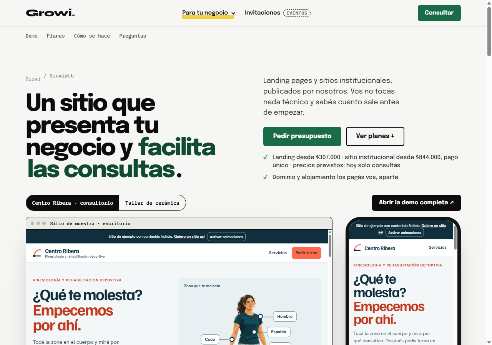
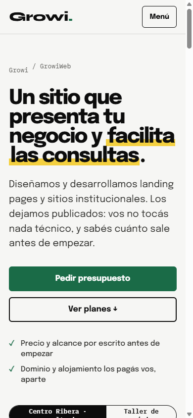
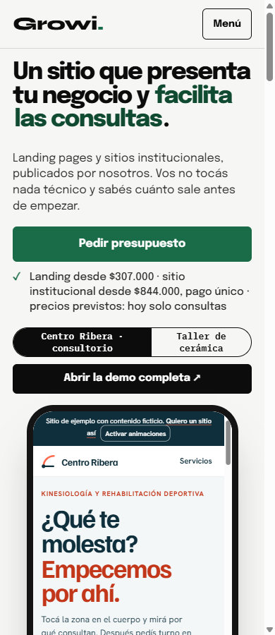
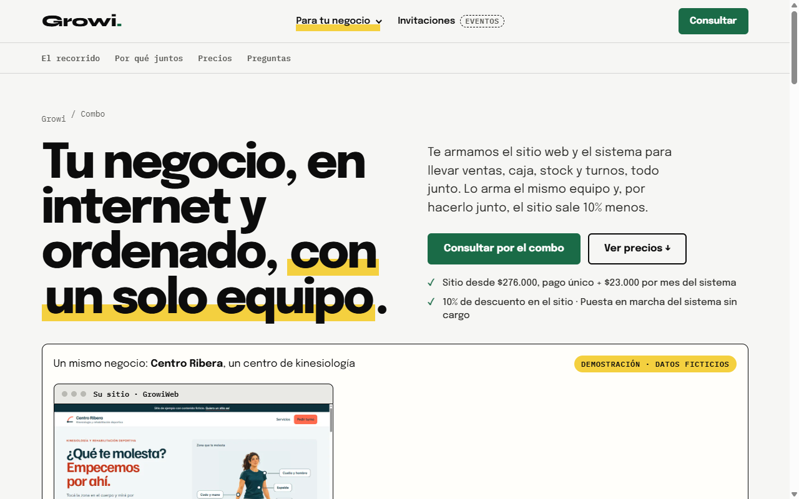
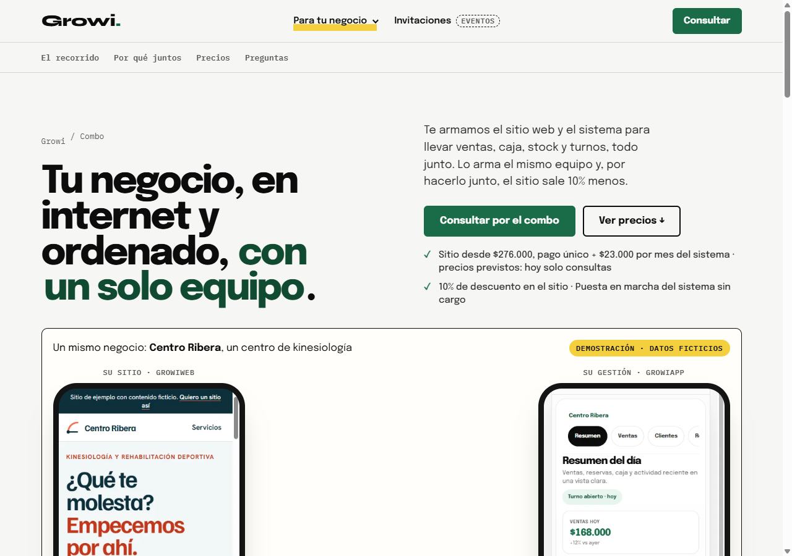
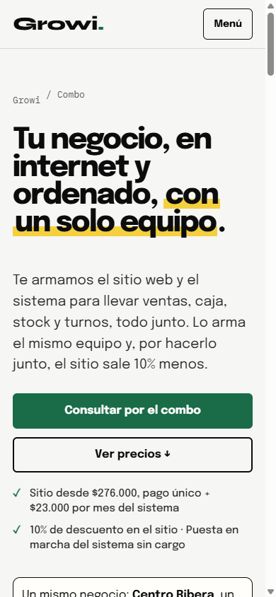
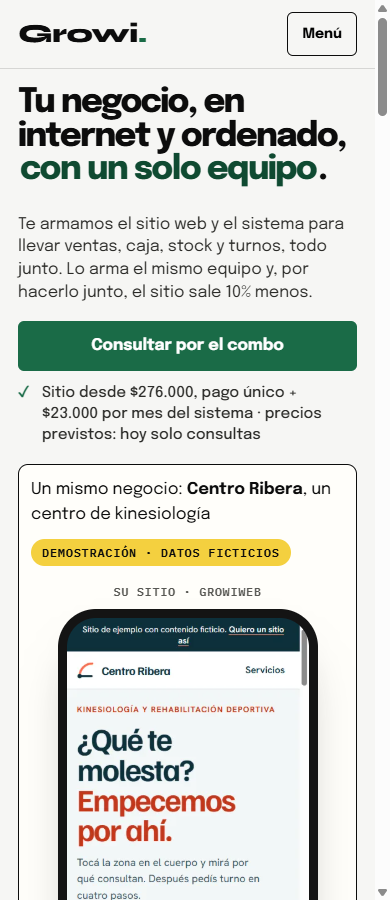
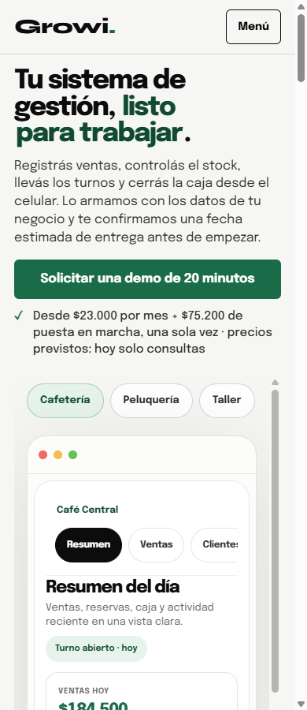
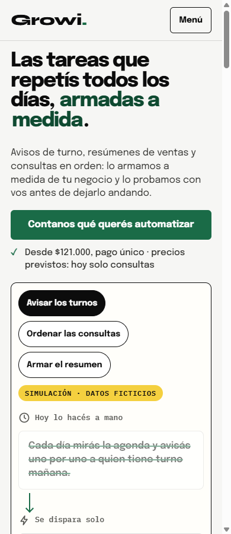

Candidata R3.1 · local y no publicada
Cierre de calidad visual y comercial
servir.bat (o python -m http.server 8800 en la carpeta) y abrir el inicio. Growi sigue en L1: solo consultas, sin contratación ni pagos. No se publicó nada ni se cambió ningún importe o gate. Pricing: recomendación separada, no aplicada.Dictamen
1. Mejoras implementadas
| Diagnóstico | Qué se hizo |
|---|---|
| Producto tardío en móvil | Migas, segundo botón y lista de garantías salen del primer pantallazo; titular más corto; una línea de precio orientativo; la demo entra antes del pliegue. La prueba pasó de 700–900 px de scroll a 443–511 px en las cinco líneas |
| GrowiWeb sin una demostración contundente | Escaparate con el sitio de muestra real funcionando: navegador de escritorio y teléfono a la vez (solo teléfono en tablet y móvil), cambio al taller de cerámica y demo completa |
| Combo con recursos pequeños | Tres teléfonos grandes y legibles (sitio, WhatsApp como puente, gestión) con el mismo negocio de punta a punta, en lugar de dos capturas de escritorio reducidas |
| Repetición visual | El subrayado amarillo queda solo en la home; en las líneas el énfasis es de color. Titulares y títulos de sección más chicos; el titular de la home ya no compite con el selector |
| Carga de las demos | Póster liviano de la misma demo (15 KB) hasta que carga la real, que lo reemplaza; el escaparate reserva su espacio por CSS. CLS de /web/: de 1,3 a 0 (móvil) y 0,03 (escritorio). Nada se sustituyó por una imagen: la demo funcional sigue siendo la real |
| Exactitud comercial | Se bajaron los absolutos («nunca más», «se terminan», «sin perder ni una venta») y la generalización «sale más caro y más lento»; el escaparate dice «una muestra del nivel de diseño que buscamos». Se conservan el aviso «hoy solo recibimos consultas» junto a cada bloque de precios y el caso autorizado de Colo Café |
| Pricing | Recomendación ejecutiva separada con la matriz de R2, supuestos explícitos, escenarios de margen y confianza. No se aplicó ningún importe |
2. Antes y después
| Línea (móvil 390 × 844) | Antes: la demo empieza en | Después |
|---|---|---|
| GrowiApp | 788 px | 455 px |
| GrowiApp · cafeterías | 896 px | 478 px |
| GrowiWeb | 818 px | 443 px |
| GrowiFlow | 702 px | 476 px |
| Combo | 816 px | 443 px |
| Invitaciones | 866 px | 511 px |
GrowiWeb · escritorio



GrowiWeb · móvil




Combo · escritorio




Combo · móvil




GrowiApp · móvil



GrowiFlow · móvil



Capturas de página completa con las imágenes diferidas cargadas (390 y 1280 px): evidencia/r31/completas/.
3. Pruebas ejecutadas (sobre la versión final)
| Prueba | Resultado |
|---|---|
| Desborde, recortes y texto menor a 12 px: 10 páginas (la home con sus 4 pestañas) × 10 anchos (320, 360, 390, 430, 600, 768, 820, 1024, 1280 y 1440 px, con tablet) | 0 en todos |
| Imágenes diferidas forzadas a cargar (390 y 1280 px); consola; respuestas 4xx/5xx | Ninguna rota · 0 errores · 0 fallidas |
| Estabilidad y peso de carga en móvil, tablet y escritorio, 10 páginas | Sin ningún desplazamiento de layout mayor a 0,005 (listando cada layout-shift); 160–267 KB por página. /web/ pasó de CLS 1,3 a 0 al reservar el espacio del escaparate. Una primera medición dio valores altos por apilar observadores: era un artefacto de la prueba |
| Escaparate de GrowiWeb: se carga, retira el póster, cambia a cerámica, vuelve a Ribera y actualiza el enlace de demo completa; el iframe de escritorio no se descarga en móvil ni tablet | Pasa |
| Pestañas de planes de /web/ con mouse, flechas, Inicio y Fin (se descubrió y corrigió que no cambiaban de panel) | Pasan |
| Demos: Centro Ribera, GrowiApp con cada rubro, Invitaciones, GrowiFlow y Combo (reproducir, interrumpir, reiniciar, cambiar de tarea) | Funcionan |
| Teclado (menú «Para tu negocio», pestañas, botones de las demos) y movimiento reducido | Pasan |
| Importes (todos están en el sitio vigente y el ARS estático coincide con el workflow) y aviso L1 en las 10 páginas | Sin diferencias · presente en todas |
Versión indexable --release, datos estructurados y simulación del workflow del tipo de cambio | Pasan (ver el punto 6) |
No ejecutado
- Teléfono físico, Safari/iOS y lector de pantalla: pendientes. Rendimiento con red real: solo medido en servidor local.
4. Skills y herramientas
| Capacidad | Estado |
|---|---|
landing-page-builder (modo asesor) | Ejecutada: criterio de orden del primer pantallazo móvil, aplicado a las cinco líneas |
natural-writing | Ejecutada en la ronda anterior (revisión de redacción); en R3.1 la precisión de copy se hizo a mano |
ux-ui-strategy, design-taste-frontend, impeccable | Referencia: no se volvieron a ejecutar en esta iteración |
find-animation-opportunities, animate, review-animations | No disponibles: están bloqueadas para el modelo y no se simularon. En R3.1 no se agregó motion nuevo. Comandos para vos: /anthropic-skills:find-animation-opportunities, /anthropic-skills:animate, /anthropic-skills:review-animations |
| Playwright, subagente nativo independiente, herramientas del repositorio | Ejecutadas |
tools.md | Solo existen copias de respaldo (~/.claude/backups); se usó la más reciente como referencia |
5. Crítica independiente posterior a las correcciones
Crítica de un subagente nativo (no Codex) sobre la versión corregida y servida, en 7 anchos, sin recibir las conclusiones del autor. Su dictamen original: hace falta una ronda corta de trabajo material antes de la revisión final; no pidió un rediseño. Hallazgos y estado actual:
| Gravedad | Hallazgo | Estado |
|---|---|---|
| Alto | Combo: el recorrido arrancaba vacío (móvil: un viewport en blanco; escritorio: dos tercios vacíos) y las tarjetas flotantes tapaban la pantalla de gestión | Corregido: las tres pantallas se ven siempre y se encienden en orden; agenda y venta pasan a marcas debajo del teléfono |
| Alto | Copy en contradicción con «solo consultas»: «el pago lo coordinamos», «se contrata solo», descuento «a clientes», garantías de devolución en presente | Corregido: garantías y descuentos pasan a «previstos», se quitó el pago por WhatsApp |
| Alto | La condición «hoy solo consultas» quedaba a más de una pantalla del precio y el CTA | Corregido: figura junto al precio de cada primer pantallazo y bajo el CTA de la home |
| Medio | Pestañas de planes de /web/ sin flechas | Corregido. Al probarlo apareció un defecto mayor propio: las pestañas no cambiaban ni con el mouse; ahora funcionan con mouse y teclado |
| Medio | Se descargaba un iframe oculto en móvil y tablet | Corregido: solo se carga la vista visible |
| Medio | Marcos de demo como paradas de Tab sin foco visible | Corregido (anillo de foco) |
| Medio | Marcos con scroll interno anidado en móvil y texto del sitio de muestra reducido en escritorio | Persiste (mitigado con alto acotado; el escritorio se ve a escala 0,7) |
| Medio | «Cierre de caja automático», «se arma solo», «nunca se pierde», «100% a medida» | Parcial: se bajaron los absolutos de rubros y combo; quedan descripciones de producto de GrowiApp que no se pudieron verificar contra una demo |
| Bajo | «Demo real» puede leerse como cliente real | Corregido («demo interactiva») |
| Bajo | Salto de scroll al cambiar a cerámica en 1440 px | Abierto, cosmético |
| Diseño | Estructura casi idéntica en las cinco líneas y cierres repetidos; el taller de cerámica es más flojo que Ribera; la home es la que menos prueba muestra en el primer pantallazo | Persiste (observaciones para el propietario) |
Salvedad: las correcciones posteriores a esta crítica las verifiqué con mediciones propias; la versión corregida no tuvo una segunda crítica independiente. El crítico no pudo medir esperas de red reales ni probar lectores de pantalla, iOS Safari o Android.
El pricing está en pricing.html, separado y sin aplicar.